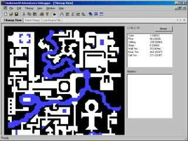
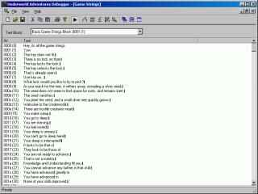

* News
* Download
* Screenshots
* Development
The dev log is the place where I write about the ongoings of the project. It is updated occasionally.
I'm occasionally working on uwadv, this time refactoring some classes in the renderer in order to fix bugs or enable some commented out code. From time to time I get the thought of "how could I possibly write such bad code", but I guess so is developer's life cycle.
Decals and tmap objects (levers and dials) are now rendered again. Also there was some fixes to the object loader that would not link objects to their tiles, resulting in no objects displayed at all. Also some fixes for Lua code that should be written differently in Lua 5.3.
In other news, the AppVeyor build service that builds the whole uwadv project om every check in now produces versioned zip files, and also the main executables now all have a version info resource.
I just noticed that the uwadv project was mentioned on Dino's Ultima Page, one of the view still active Ultima fan pages. I occasionally read the pages for details on Ultima Underworld or just to reminisce about the old days playing Ultima games.
I worked on collision detection, writing unit test and trying to fix bugs when walking through the level. Telemachos' tutorial from past times was a great help, but over the years some people noticed some numerical instabilities in the algorithm, leading to some articles. I tried to incorporate the fixes proposed, but am not entirely satisfied.
I also merged in the changes in the MIDI code from the Exult source that shares the code with Pentagram (and now also with Underworld Adventures). I figured out that the file "uw.mt" in Ultima Underworld is a Timbre library (whatever that is) and that the MIDI code can load the file. I'm not sure if there's an audible difference, though.
I'm currently working on cleaning up the code base from the refactoring that I started in 2003, before quit working on the project in 2007. I'm using Visual Studio 2019 Community edition, which works great and even got back the resource editor. Some tools are already ported, some are still missing. I also updated to the latest libraries of SDL2 and zzip.
Back then I started to improve the code base by rewriting the libraries, starting from the base library and half-finishing the import library. Nowadays I would do things differently, trying to evolve the code base, but it seems I'm a bit smarter after 16 years. There's lots to be done, and no set time for a new release, since I'm only working on the project occasionally.
One of the first new features is that converting the file names of the original uw1 or uw2 files to lowercase isn't necessary anymore, as the resource manager in uwadv now builds a mapping from logical filenames to actual filenames on the hard disk. The same resource manager allows that the game files can directly be loaded from a zip archive, so extracting the game files isn't necessary anymore.
Today I moved the source code for Underworld Adventures from SourceForge's CVS hosting, which is in obsolete and read-only mode for some time, to GitHub. Converting was done with cvs2git, which involved downloading a CVS backup with rsync and then converting it on SourceForge's Shell services. So the whole development history of the project is now preserved on the GitHub project for Underworld Adventures.
I also began converting the web pages that are hosted on SourceForge.net to modern HTML5, using flex-box and a responsive design based on the old pages. Now the pages look nice even on smartphones. I also put up a note on the SourceForge project page with the new URL of the web pages, at https://vividos.github.io/UnderworldAdventures/.
Started working on code debuggers by adding the ability to send messages to the client and send "start" and "end" messages for code debuggers. On the client side one or more code debuggers can be active, all with their own breakpoint lists, etc. Actually in uwadv there will be two different code debuggers, one for conversation code, and one for Lua code. A code debugger can be set in one of several states, such as running, stopped, single-stepping, stepping out. The client can set and query breakpoints. When in "running" mode it gets a message when a breakpoint is reached. Also fixed the ua_physics_check_point_in_triangle() where I introduced a bug that shows in physics code when fixing some compiler warnings.
Improved master object list viewing and client interface. Added editing for all values.
Added common base class for docking and child windows. Added project info docking window that later should show all Lua source files and all active code debuggers.
Added the new Underworld Adventures Debugger that is done using WTL and uses several third-party source libs such as docking windows, tabbed windows and xp-style menus. Added needed project files. Updated version info of all generated binaries.
Many minor changes at several places. Removed some tools and added project files for some tools.
Added sources for Underworld Adventures Studio project. The uastudio basically is a stripped-down game that doesn't display graphics and has no user interaction, but it hosts a full game. The debugger is started automatically, so in the end it looks as the user has started a "Studio" application to develop and test custom games. Also enabled new-style browsing for folders to the "Underworld Adventures Config" program.
Started adding project files for vc71. Now every subfolder (and "component", such as "base", etc.) gets its own project file and thus static library.
Worked on the underworld debugger and put tabbed MDI browsing, XP Menu and docked windows together. Here's a screenshot showing the look of the program so far:

Fixed tilemap rendering slowness by using a memory DC. And on the tilemap view there are now two boxes with infos about the currently clicked tile and it's objects. I plan to use icons directly from the games for the objects.
Worked on the tilemap view and improved rendering. Drawing the diagonal tiles is painfully slow, though (GDI polygons). Here's a screenshot:

Clicking on any tile in the view lets you view the tile info. The button teleports the player to the new position (makes hotspot list almost useless). Later the objects in the current tile should be listed in the empty box below the tile's data. Each object should get it's 16x16 icon from the game, and object properties can then be edited in another dockable window for "object properties".
You can also see David Bowen's Tabbed MDI window magic. It has a tab for any MDI (non-dockable windows) that are in the app's working area. Unfortunately Sergey Klimov's Docking framework doesn't quite work together with the tabbing framework. And the XP style menu of course doesn't work together with all other frameworks. Oh well ...
Improved RSS output a bit, Feedreader had some problems with RFC 822 dates without correct time. Also added a limiter so that html output is limited to the last 10 items, and RSS is limited to the last 8. I guess good RSS aggregators store the older articles somewhere. At the end of the html output is a link to retrieve the full log.
Worked on the debugger's object list docking window (which should probably be a full MDI view) today, but it isn't finished yet. It is planned that values changed between two updates are drawn with red background. Editing values also still don't work. It is planned that the object list is more an "advanced" view for the real hacker. Object placement and modification should normally done using the tilemap viewer and some "object property sheet". It may even be good to do some wizard to accomplish more complex tasks, such as a "Place Trap Wizard".
I'm currently working (for the last month or so) on a new Underworld Adventures Debugger implementation using WTL as UI library. This way I get much quicker to what I have planned to do. I've also done a "uastudio" project that basically is a cut-down uwadv executable that only contains the game engine, needed classes and runs the game's main loop. It additionally starts the debugger. "uastudio" is the "Underworld Adventures Studio" application and helps me to quickly develop the new uadebug.dll. Additionally to the debugger I'm extending the ua_debug_server_interface interface to extract the needed infos. I've done some screenshots to show off what I've done so far. Click on them to show the larger version.

This is the game strings view. The shown text block can be selected with the combo box, and the list just shows the strings. The little black squares are newlines that should be replaced with \n soon. In general you have a menu bar (with cool XP style menus, yeah!) and a toolbar (technically a command bar). Notable is the "play" button which can suspend and resume the game loop in the game. You only will be allowed to change values when the engine is stopped. Next to the button are the ugly designed buttons that enable all the goodies the debugger can view. First one is "player info", then comes "object list", "hotspot list", "tilemap view" and "gamestrings view". If someone has better icons, just send them!

Shot 2 shows the tilemap viewer. It's still in the making, and it only shows the first map of the level (level map management will be added soon). Later you will be able to click on a square and see/modify its tile type, height, wall, ceiling and door textures. It is also planned to add an object editor into this view, so that objects can be conveniently placed.

Shot 3 shows the Lua source file editor. The window uses Scintilla for editing and syntax highlighting. When Lua code debugging is built in (this has to wait a bit), you can set breakpoints on the gray area to the left, just like in Visual Studio. A "project" pane that docks to the left side is also planned. It lists all Lua files that a "game" currently has loaded.

Finally, shot 4 shows the hotspot list and the player info, with no main window open. This means you certainly need more than a 800x600 screen resolution to conveniently work with uadebug. Player info even allows changing values, so modifying the "maplevel" teleports you to another level, and changing "xpos" and "ypos" moves you around in the level. Not very usable in uastudio, though :)
Used technologies were WTL (for the general UI stuff), David Bowen's Tabbing Framework (not shown yet), Sergey Klimov's Docking Framework, a hacked-up version of MenuXP (all three from www.codeproject.com/WTL/).
uwadv's devlog now conforms to RSS 2.0 and Feedvalidator confirms this: check. The date wasn't RFC 822 conform, and the description tag must encode html chars like < and > as entities.
I modified the devlog so that devlog entries are stored in an xml file and the web output is done using an xsl-transformation. At least that was my initial thought. SF doesn't directly support that, so I had to use the expat parser, which registers callback functions for elements. The handlers then output html code. It's more limited than xsl-transformations, but it suffices for what I want to do here. I've also done RSS 2.0 output so that everyone with an RSS aggregator can read the devlog. I then tried SharpReader and Amphetadesk. The results look ok, but both aggregators seem to have problems with the embedded html code, so links won't show up, and other small problems. Also the pubDate field isn't formatted correctly as in RFC 822, but I'm too lazy to do that now.
Flushing out stdout and stderr when an ua_assert condition is false. This helps in debugging when the output files at least have *some* output. Worked on improving decompiling conversation code all day and it really gets nice. The opcodes are first put in a "graph" with different graph item types, the first being "opcode". Opcodes are then examined, function starts and ends are added, and additional "expression" and "operator" items are put in, too. Processed opcodes are marked done. Operators consume zero or more expressions and may yield no or one expression. Expressions are things like local variable value or pointer to memory location. They can have the attribute "value-of" and "address-of".
In the next step operations search their needed expression from the graph and combine them to new expressions or a new type of graph item, a statement. The statement doesn't need expressions and doesn't yield one. The items are properly inserted in the graph and used items are marked done. Dumping the graph then shows the work already done on the graph. Currently there are only some opcodes left that are rarely used. And control structures like "if", "while" and "switch" aren't put in yet. Another problem is with temporary local variables that are set and directly used in function calls then (in conv. code all parameters are passed by-reference). The function call is inserted before all temporary parameters are set, but this should be easily fixed.
Added some code to debug server to load new games and to retrieve current game.cfg path. Added done_game() function to clean up a game in the main game object.
Reworked debug server and client architecture. All function calls are now made through a vtable ptr that the client gets when starting up. This also should work under linux and probably other OSes when the uwadv application and the uadebug shared library are compiled with the same compiler. Introduced class ua_debug_lib_context which can be customized for different OSes to load the shared library and start up the debugger. Removed win32 specific file with debugger implementation. All targets now share the same code. Fixed/changed some debugger code.
Aisha Fenton sent an image of the MacOS X port, running uwadv on a mac desktop. Nice!
Fixed drawing text edit window when using prefix text. Re-added intrinsic "babl_ask" to conversation screen to type in custom answers, e.g. when talking to Lakshi Longtooth. The string is then allocated in the local strings list and the handle is passed back to the code vm. Added getting npc global variables.
Fixed some gamestrings loading bugs. Separated conv. code loading into ua_uw_import class, changed data types enum and removed exception usage when vm errors occur. Separated graphics import functions into ua_uw_import_gfx class to not having a dependency on including "image.hpp" (needed for ua_palette256).
Moved game strings class from underworld to game object and fixed usage throughout the sourcecode. Moved conv. globals and conv. stack classes to own header files. Partly commented out conversation functionality, which will be reworked later.
Added ua_assert macro that checks for users errors and game conditions and throws an exception when needed. Added ua_levelmaps_list class which contains the list of ua_level objects in the underworld. Separated conversation globals loading into own file and updated conversation class accordingly.
Fixed bug where one couldn't exit savegame screen. Added leaving cutscenes with space key. Added getting and setting savegame infos when quicksaving. Fixed fading in on ingame screen when reentering screen.
Removed section support in ua_cfgfile, moved uw1 files check to ua_gamecfg file reader. Enhanced game strings loading by only loading string blocks "on demand", e.g. when a string in a block not available is requested. Blocks have a "lifetime" counter and some blocks are never paged out again, e.g. the block 1 with strings that are commonly used. The loader supports loading from multiple SDL_RWops structures now. Splitted basic methods of the ua_game_interface into ua_basic_game_interface, which lacks stuff not needed, e.g. for the debugger or when building an "Underworld Adventures Studio" application. Scripting now also only gets an ua_basic_game_interface pointer. Audio playlist is loaded via ua_cfgfile now. Updated player info list in uadebug to show player values again. Several other source code cleanups. Updated debian build files with those from Radoslaw and released the package.
Aisha Fenton from New Zealand wants to tackle the Mac OS X port. Very nice!
Released "0.9-mojito" today.
Fixed most doxygen warnings and updated copyright string on modified files. Added uw-formats.txt contribution from Max Gilead. Already released the mingw32 setup packages for compiling and building the installer. And released the music pack. Currently we have two separate packages "uwadv" and "uwadv-src" to release files; maybe we should just use "uwadv"?
Fixed some bugs found through valgrind warnings. My mingw32 compile crashed unexpected when first saving a quicksave savegame and then entering the savegame screen. The error was initialisation order; the info area accessed the ua_savegames_list before it was initialized. Fixed another bug when exiting savegames screen via "exit" button and immediately pressing another button. Updated Underworld Adventures manual. Added lift-off to physics code; should fix walking slopes; it's better now but still a bit jerky. wjp fixed rpm .spec file; libxslt and docbook-xsl is needed for building RPMs. Updated some texts. Fixed debug symbols for mingw32 builds when WITH_DEBUGGING is on (hopefully). My gdb still told me that no debug symbols were found. Added wish from Dominus: the manuals are now only built when doing "make installer".
Updated version info; new version is codenamed "mojito". wjp added docbook building to automake Makefiles.
Fixed conversation screen and enabled it. Fixed taking screenshots; also increased screenshot size to 160x100. Removed "save" button on savegame screen when entering with Ctrl+R (restore game). Fixed printing on textscroll when output is longer than a line. Savegames are now made up a bit differently. All tilemaps and objlists now have their own section, with a "tilemaps" section at start that tells how many tilemaps we have. Mapnotes are per-level now. Added notification of underworld callback about level change (to prepare new textures and stuff). Fixed player start position, now set per Lua script. Fixed traps. wjp fixed make dist. And sorry, no april fools this year :-)
Moved setting 3d window viewport into ua_renderer class. Fixed text scroll printing and scrolling. Fixed looking at walls.
Implemented taking screenshots for savegames. Lua: implemented most Lua C functions; they are now callable like C++ objects: "tilemap.get_info()" or "uw.print()". The trick is to put the C functions into global tables. Implemented objects "uw", "player", "tilemap", "objlist", "runes", "conv", "quest", "prop". Updated Lua code to use the new functions.
Removed #if'ed-out savegame code that was once there to save unpacked savegames. The savegame file can be unpacked using gunzip anyhow. Fixed loading level maps. Updated physics code to use the stuff found in Telemachos' new paper (well, he released it in July, but I only found it now). Walking slopes still hangs on some occasions. Also added a test suite for physics code. Changed Lua scripting interface a bit to support looking at and using objects.
Fixed savegame dialog under uw_demo; the character creation bitmap I'm using isn't available there, so I only draw some edged boxes that should do. Added Alt-key shortcuts to all controls on uaconfig.
Scheduled new release date to be on 2004-04-10. There also will be a new musicpack, since I've found the "wanderer" and the "maps & legends" tracks on my hard disc, done by QQits long ago (in 2002). I don't know if the tracks are finished, but surely worth listening!
Started to refactor physics code. Telemachos has published a new version of his paper on collision detection and response. So far it seems he didn't change the whole concept, so it should be rather easy to implement his new ideas about swept-sphere stuff.
Finished mouse action code on inventory panel. Renamed script.hpp to scripting.hpp. Fixed getting item category and ua_inventory::is_container() implementation. Added unittest.hpp/.cpp that implements a ua_unittest_run() function. It is used to run all unit tests written using CppUnit and that are registered with the test suite registry. That way we can place test classes all over the source folder (in "test" subfolders) that should test different components of uwadv. Tests should be written for every new class and/or functionality. If a bug occurs, a test that fails should be written, then the bug is fixed and the test has to succeed then. This way we can assure our code always performs correctly, event when a class implementation changes.
Added is_container flag to common object properties; it indicates if an object can contain other items; the 3d barrel also has this flag, but cannot be picked up, but it can be emptied. Added armour and wearable properties. Fixed ua_inventory class by using the is_container flag, the item categories and the scripting method to combine items. Added inventory panel drawing and started to work on the mouse action code.
Tested uwadv on an older system using a 3dfx voodoo banshee card; fixed drawing textures bigger than 256x256 pixels.
Added text edit window ua_textedit_view. Added game events for text edit window to signal aborted or finished editing. Added entering savegame description and saving; screenshot taking has still to be done. Fixed drawing info area. Readded the transparent flag to ua_image::paste_image() to more simplify drawing. Since it's only an inline method, it should be optimized away. Implemented up/down buttons on player stats view.
Fixed bug on text scroll when trying to render an empty line. Added version info resource to uwadv.exe, uaconfig.exe and uadebug.dll; when later using .msi packages we have proper version info. Fixed a bug found in STLdebug mode while initializing savegame screen.
Fixed ua_debug_server_impl::get_message() implementation; A std::vector<char> is now used as temporary buffer to get the message string (and only when it's available at all). Added printing STLport version (when used). Removed code to load savegame format 0, since there are 2 different versions that we cannot distinguish from. Added usage of msxsl for xsl transformation used in docbook creation. Added usage of STLport's STLdebug mode when WITH_DEBUGGING is enabled. Ah, and wxWindows now is wxWidgets.
Implemented updating runeshelf window from data in ua_runes. Fixed some valgrind warnings reported by wjp. Fixed bug in critter frames loading; an array was allocated with new and put in an ua_smart_ptr<>, which deletes the array with delete, not delete[] -> memory leaks or undefined behavior! Added experimentally omitting 1st pass when loading, bit it's still buggy and only saves about 20% loading time. Enabled with define OMIT_1ST_PASS. Added on-the-fly critter frame texture uploading; hlps greatly in cutting time while preparing a level. Modified ua_smart_ptr to have a pointer to an internal struct that holds the managed pointer and the reference count. The smart pointer now has the same size as a normal pointer. Webpage: put html template code into own file that is included where needed.
Added message queue to debugger implementation. Implemented shutdown for debugger on debug server side. Client should then check for messages occasionally, either in the idle loop or via a timer. Other messages from possible code-debuggers are passed via the message queue, too. Implemented via an STL deque, where new messages get pushed at the back, and the debug client gets messages from the front.
Prevented mipmap texture generation for object textures, removing the black squares in object sprites. Added preparing of all critter textures for now. In the future texture preparation will be done on-the-fly, to speed up things. Fixed render_sprite() method and added critter rendering. Finally fixed the savegame preview image rendering on savegame screen. Also added the "smooth ui" option to uaconfig. And added the website to CVS repository.
I'm very sad to tell that www.samandmax.net reported today that Sam & Max 2 - Freelance Police was cancelled. Darn! That could have been the next game I've bought and played (I'm not playing much games, except for uwadv and uw1, and a bit of Diablo 2). Well, have to start up ScummVM with the classic Sam & Max then.
Reimplemented text scroll; it now supports color codes used in conversation strings, e.g. \1 or \0. Added some more colors that were not used in the original games. Also added an offset value for text scroll generation. This should help in implementing a text scroll with scroll paper edges, also used in conversations.
Added new ua_runes class that manages runeshelf and runebag contents. Added move arrows (below compass) handling. Movement is done by simulated key presses.
Fixed compiling under linux. Bumped savegame version from 0 to 1 to differentiate between version 0.8 and 0.9. ADded listing skills value on stats panel. Added building manual using xsltproc and docbook-xsl, for mingw32.
Added runebag panel drawing and checking for mouse clicks on runes. Added a panel interface class that is used in ingame screen, and later in the conversation screen as well. Scripting object is now cleaned up in the proper place. Fixed bug with black button background on the character creation screen. Fixed some other minor things. Added some more hotspots to the hotspot window in the debugger.
Updated .nsi script for windows installer; NSIS is soon releasing the 2.0 version.
Fixed ua_screen class bug where right mouse button clicks weren't recognized properly. They weren't used till now so this bug went undetected. Added "power gem", and added attack code so that the gem lights up properly while attacking. The ua_underworld object manages the hit power internally. Added combat keys. Fixed palette usage in save game screen, relative coordinate calculation in 3d view window, fixed loading Lua scripts in create character and cutscene screen.
Added a set_palette() method to ua_image; this way it's more obviously to set the palette than assigning to the reference of the smart pointer. Fixed loading "panels.gr"; special case for panels wasn't recognized. Started reworking the panel window. And the tick() method in ingame screen is now called for every subwindow; needed for animated windows later on.
Added tooltips for all controls on the underworld config utility. Tried to fix syncmail script in CVS.
Added invisible 3d view class that manages mouse movement mode. Implemented mouse movement mode, too. Changed all ua_screen-derived classes to have a ref to ua_game_interface as first parameter in every ctor. The game interface reference is passed on from screen to screen then. Added user action enum values needed for object interaction, e.g. looking, using, talking to objects or getting items. For now all user actions have loose ends into the scripting class.
Removed pointer to texture manager for ua_texture objects; not needed anymore. It was used for checking if the texture is already active, and glBindTexture() doesn't have to be called twice. Pretty obsolete, since OpenGL probably checks this for itself. Because of this the ua_texture::init() method and all ua_texture users were changed. Added method tick() to ua_window, to allow e.g. for animating (sub)windows. And another major change: All screens get a reference to ua_game_interface in the ctor now, since all screens have to be created with new. Because of this all ua_screen classes now have a reference to ua_game_interface as member, and not a pointer anymore. Added invisible 3d view class that handles mouse actions like mouse movement (and limiting cursor to the 3d view when mouse-moving) and icon setting and such.
Added missing key for pressing buttons in menus (the return key). Fixed all sorts of bugs with the command menu, especially with keyboard usage. Added scripting pointer to ua_underworld class, so it can call scripting for various functionality. Added some more scripting interface methods and their dummy implementation for Lua. The method init_new_game() is now called when a new game is started, to initialize player, etc. Added "init-scripting" and "check-files" keywords to game.cfg parsing, but with no implementation. The first one should allow dynamic selection of scripting language, e.g. when someone (in the far future) wants to write his/her scripts in Ruby or so. Of course he/she also has to write the scripting bindings then ;-). The second keyword should specify a config file with a list of files that have to be there to successfully run the game.
Applied block-comment patch from Lua Power Patches. Block comments start with --[[ and end with ]]--.
Built libzzip.a and liblua.a in mingw now, to save some include paths in the uwadv compile command. Added docbook source files for uwadv and uadebug documentation. Reenabled tga texture loading. Added splash screen while init'ing the game; it reads "Underworld Adventures is loading...". Renamed "lua-script" command in game.cfg to "load-script". Scripting is now initialized with the static ua_scripting::create_scripting() method that takes an enum with the scripting language to load. Added some ua_scripting abstract methods. Some other small changes.
Added starting the debugger and related functionality. Redone and simplified debug interfacing as debug server / debug client class. OS-related stuff now goes into a debug_impl.cpp file (only for win32 for now), Linux stuff doesn't work right now (and never has, probably).
ua_renderer::tick() takes tickrate, not a timespan. Added some doxygen comments.
Fixed some stuff in code and documentation. Added setting texture parameter for tile and object textures.
Enabled master object list loading. Added critter frames loading and moved stuff to renderer subfolder. Added preparing the critter frames as textures. Added critter frames manager (formerly critter pool). Moved 3d model manager to renderer subfolder, too. Added resetting time counting in main game loop when a frame took longer than 5 seconds. Chances are high that I just debugged the code and wanted to continue running the game (only in debug builds). Fixed stock texture loading; an off-by-one error. Changed quadtree class to have a callback function that is called when a visible tile is encountered. Fixed a bug in quadtree class where tiles at the frustum edges were not collected properly. Started to rework object and critter rendering.
During winter holiday I chose to examine uw.exe further. It's interesting how the Looking Glass team built Ultima Underworld. They used Turbo C++ 1.01 (or 1.0) (available for free now at the borland museum for programming, but no C++ features. Some modules were compiled for overlaying (switch -Y); Turbo C++ uses Borland's VROOM (?) engine for swapping in/out code segments when code calls some functions in other overlaid modules. This time the uw team could save much conventional memory space. The segments seem to be stored in EMS memory. I played around with decompiling uw.exe with dcc, but because of the calls "outside" the normal memory space into the overlay manager it obviously failed. Additionally the engine loaded the wrong library sigs (Borland 3 was identified). The decompiler engine looks promising, though, but isn't actively developed anymore.
Added imports for properties, player, tilemap and map objects. Added user actions and notify calls to underworld and added method to register callback. Enabled savegame loading. Added setting game mode per command buttons.
Added "smooth-ui" setting in uwadv.cfg; it can be used to get a "pixely" appearance of the user interface. Fixed crash bug in ua_screen where associated screen keymap was NULL but was accessed anyway.
More or less fixed compiling the character generation screen; that one surely needs a redo. Most buttons don't redraw their background properly.
Introduced new class ua_debug_server; no more work on the debugger yet - the changes were only done to complete the uwadv game class code (I don't expect changes here for some time; all code should be pretty encapsulated).
Revised the README.dev.txt document; it now has only startup information; the one and only source code documentation is the doxygen docs now. Improved docs on the "base" module.
Ingame zpos is now in range [0; 128] as the objects are, too. They just didn't use that much precision in the uw1 code for tile positions. Enabled slight fog, which somewhat hides the far clipping plane. Added vitality and mana flasks, gargoyle eyes, text scroll, runeshelf window and active spell area. All window work, but some "update" code and actions has to be written.
Added starting music when (re-)entering the screen. Fixed playlist loading (had audio turned off during development, so I didn't notice this until now). Audio tracks can now referenced with an easier-to-remember enum.
Added base class for all ingame_orig windows. Added compass window. Hopefully finally fixed ua_ingame_quad drawing; there still were errors with some window sizes. Nicely documented the class.
Started reimplementing original ingame screen. Revised ua_keymap and removed unneeded functions; the mapping of keymod values and key enums were reversed. Also fixed keymod search: the fact that the user usually only presses one ATL or CTRL key wasn't recognized when searching keys. Some other minor changes. The dot tool is now used with doxygen (if installed) to generate some nice include and collaboration graphs.
Disabled tools by default; they surely won't build :). Added geometry provider class, which is responsible to generate textured triangles for the collision detection/response and the renderer class. An idea would be to use OpenGL display lists for tile triangles (that can be updated, e.g. for moving tiles) that can be stored as tile "metadata"; when rendering the display list indices can be collected, sorted by texture id and thrown at OpenGL in an efficient manner then. Fixed floor texture loading (passed wrong filename to loader function). Moved texture manager to implementation class and added a prepare_level() function that prepares textures and could to the above mentioned display list preparation.
Added a find_key() method to ua_keymap to search for the key enum for a given pressed key. Maybe this is now the most important function and the map association can be reversed. The function is used in ua_screen::process_event() to handle key events and finally call overloaded ua_screen::key_event() methods. The rest of keyboard handling is just a big switch statement with the key enum value.
I'm also implementing an ua_ingame_new screen to test some ui/render classes and concepts. The screen might finally become the new user interface screen.
Added some convenience functions to ua_window. More work on the savegames list window.
Some work on uw2 critter animation files decoding.
Fixed cutscene view screen and re-enabled the introduction. GL_BLEND is now used when rendering mouse cursor. The GL_BLEND state is restored after rendering again.
Fixed acknowledgements screen; it now uses one cutscene image quad and a "fadeout" image quad with the image to fade out, which saves one image quad and a 512x256 texture.
Added border "feature" to ua_image_quad to get seamless sub-windows. When using split-textures (only on older graphic cards) there still is a small seam.
Fixed image quad rendering, and two split-textures are now only used when the OpenGL driver reports a max. texture size of 256 or less.
Changed the ua_palette256 type to be a class and not a typedef anymore. This beautifies the code to create, clone and rotate palettes a lot. Fixed mouse cursor rendering.
Try to fix image quad class; textures were only drawn white, since no texture params were set via glTexParameteri(). Updated splash screen and start menu to use the new ua_image_quad and ua_cutscene implementation. Added check for wxWindows, later used for uadebug. Mostly fixed linking.
Try to fix palette typedef usage. Fixed mouse cursor class, which now is also derived from ua_window. Other small changes.
Object images are now put into stock textures; they previously were hold in an image list, and before that they were copied into two large 256x256 textures. Moved texture loading, cutscene loading and frame extraction to import folder.
Redesigned the ua_image class, replaced ua_image_list with a STL vector of images, rewritten image loading. Redesigned ua_texture and ua_texture_manager class, and fixed texture loading. Added image manager that manages loading and holds game palettes (they previously were managed by the ua_texture_manager). Changed base class of ua_image_quad to ua_window, since this should become our base window "control" for basic image rendering. Specialized windows such as scrolls and the like can be derived from this class then. Other small changes.
wjp fixed the autoconf/automake files for the new directory structure, since the Lua sources were moved by SF staff. Moved files only need to be updated in Makefile.common anyway.
Improved source documentation.
Opened a support request to move the lua source to a subfolder of the "script" folder. Re-added custom language pack loading. Re-enabled cutscene, acknowledgements and savegame screen. A lot more small changes and updates.
Added Lua script class, derived from a scripting base class. Added doxygen grouping to categorize class documentation into different "modules".
Added fading helper class and used it in start splash and start menu screen. Fixed acknowledgements screen. Character creation and cutscene view will be harder to fix, since they use Lua, which is going to go into the scripting folder.
Redone mouse cursor class to be derived from ua_window. Added handling of mouse events via the new ua_window member function mouse_event(). The function is only called if a mouse event occurs in the window the mouse is over. The mouse cursor class is used in start menu screen.
Converted uwadv menu screen and start splash screen to use the new ua_screen base class. Fixed some errors and added a texture manager object to the renderer class to have access to the texture manager. wjp sort of fixed some autotools related files.
Added game interface class that is similar to the old game core interface, only better :). Added some more main game loop stuff and added back game strings loader to fix linking (at least for me, hehe).
Moved most files to their new places; only did header and comment changes and commented out stuff that refuses to work. Thought about an game interface class similar to the core class that glues together game objects and the underworld objects. Scripting will become a separate component and the Lua stuff should be capsulated so that in principle one could choose what scripting language to use. The game interface would also manage the scripting - game objects interfacing.
Moved font class to ui folder and changed the way stuff from uw1 and uw2 are loaded now. There is a general import class (for loading common formats) and two specialized classes for uw1 and uw2 that can be used to load the various resources.
Removed some -Wall warnings, added some GPL headers to automake files and some other small changes.
Continued working on the ua_window and ua_screen base classes. Set up SDL window creation and main game loop again; some stuff is still commented out.
Redone the main() function, which is now os-independent. Commented out most of the ua_uwadv_game (previously ua_game) object and fixed win32 implementation. os-specific objects are created using the ua_game_create() function.
Started redoing the user interface classes, having a ua_window and ua_screen base class. ua_window is a rectangular area on screen, can draw itself and can process messages. ua_screen can do all that and additionally manage ua_window subwindows. drawing and event messages are routed to the subwindows, too.
Started to reorganize the audio folder a. Renamed some classes, files and added comments where needed. Introduced (or better, renamed the ua_audio_interface to) the ua_audio_manager class that now handles all audio stuff.
Committed some left-over files to the repository and set a tag "refactoring_start_20030815". Started to reorganize the whole source tree into more logical components that shouldn't depend on other components, or at least only on one or two. There also could be unit tests for each of the components. Also improving comments and code style while moving around files.
Moved the config file base class, files manager, savegame class, settings, math classes and the utils to a "base" folder. Made some classes independent of all other classes, e.g. Lua script loading in the files manager or savegame info filling from ua_player objects. At the moment the project doesn't compile :)
Done some work on the critter workbench test project. There now is a red dot representing the currently selected (and later evaluated) critter. Adding pathfinding should be the next task, and also a mode to check the pathfinding results. Should be able to borrow some code from Exult or so :)
Added a pathfinding skeleton class to have an overview what the pathfinding algorithm interface should look like. Also started a test project, a "critter AI workbench", a 2d top-down look on a level that can be used to evaluate AI and pathfinding code.
Thought about a new set of Lua functions to simplify critter AI, and to help John McCawley getting into coding some AI. In the last days I tried around creating a msi package (windows installer service) for Underworld Adventures, but hand-editing the many tasks is pretty complicated. Plus I have to download almost the entire Platform SDK, which comes as whopping > 300 MB. msi2xml would definitely simplify a bit of the work.
More or less fixed the huge loading times for critter animation frames. Frames are loaded into a pre-allocated memory space instead of inserting thousands of ua_image objects into std::vector containers. Also changed the ua_critter code to support animation frames with different texture sizes, but this isn't used yet (code was committed on 2003-06-23). Uploading all animation frames (about 36 MB worth of 32-bit texture data) also takes pretty long. Should be enough when only the current set of frames for an animation currently used has to be uploaded to OpenGL. Worth a try.
Added some more screenshots showing 3d objects and wall decals.
Things might get slower a bit (I got a job). On the other hand, no :) I'm playing around with several things: found a Lua debugger (Titmouse) with source that shows me how to do the Lua debugger in the Underworld Adventures debugger. Although uwadv has grown too big with time to start it to quickly verify some things. A solution would be a mini-uwadv that just calls the uadebug and implements some callback commands needed to get it running.
Another thing I'm looking forward to do is to improve critter animation frames loading. Currently it takes almost forever compared to the last release. The main reason for that is that a ua_image object is constructed and copied twice for every frame loaded, which could be improved. And finally Servus did a door texture, which could be plugged into the texture manager easily by having another config file in the game's uadata folder.
Rewrote the quadtree tile culling stuff using the ua_vetor2d class and throwing out all unneeded stuff. Added another render() function to ua_renderer that receives all player dependent variables; the ua_renderer class could also be used for map viewer now. Changes were made to support the uadebug tilemap view.
Invented a new system to process messages, especially mouse messages, based on areas, implemented in the template class ua_message_processor. The user of the class can register member function pointers to handler functions, together with the area definition. Processing for keys in a ua_keymap is planned, too. The new system should make the whole process of treating mouse messages much easier.
Reimplemented start menu dialog using the new message processor as a proof of concept. Should improve handling all those mouse events in ingame screen, too.
radekg2 added all files needed for debian package building. Cool thing!
Added ua_vertex3d struct and changed how ua_triangle3d_textured is implemented. Added a polygon tessellator class based on gluNewTess(), gluDeleteTess() and gluTess*() functions. Changed loading and rendering builtin models to use the polygon tessellator. Some models still look strange, though.
Added experimental "tilemap view" to underworld debugger. It uses the same rendering functions as the game but a seperate ua_renderer object. Currently resizing the frame window results in lockups. Added mutex implementation for locking the underworld object (lock/unlock was an empty call 'till now), but it doesn't help either. Have to investigate further.
Added Radoslaw Grzanka "radekg2" to the project; he is responsible for debian packaging. Released his .deb package for the 0.8a-hot-chili release. Started discussion with John McCawley about AI implementation.
Added dumping to the builtin model loader, to be used in uwdump. Removed the viewer part of the modeldecode.cpp, which is now implemented in uwmdlview. Added support for uw2 level dumping to uwdump.
Opening container can now be done in any game mode, not just default. Fixed a bug with the priority cursor code, fixing all 3 bugs uwadv currently has. Done a win32 binary release 0.8a-hot-chili.
Fixed bug #722818 submitted by Radoslaw Grzanka (radekg2).
Implemented "a_delete object trap". Added "can be picked up" flag from common object properties, preventing the user from picking up some objects. Bridges rendering are fixed temporarily by just drawing the bridge square. Also fixes collision detection. Have to find a way to subdivide the concave polygons delivered by the builtin models decoder. Omitted rendering of some objects not 16x16 and thus not available in the object images list.
Documents were updated for the release. Added some more hotspot points to the debugger's hotspot list. And a lot more small fixes. As I tested the release with uw_demo, the game crashed because no builtin models could be loaded; added the model positions for the uw_demo.exe build I have. Fixed crash when changing to next level in uw_demo, e.g. by teleport trap in the gray goblin's area. An exception is now generated. Fixed priority cursor functionality in ingame screen. Fixed textscroll when input line gets too long. Phew, a pretty long list o' stuff.
Added an underworld builtin models viewer and rewrote the models decoder to not subdivide the (often concave) polygons. Disabled collision detection for bridges temporarily. Moved the ua_model3d implementation classes to own header file. Fixed the luac Lua compiler; it had some stub functions to not pull in all liblua functions.
Fixed the #undef main part of most tools; the reason for most undefined _main macros was the fact that the main function has to have the exact signature "int main(int argc, char* argv[])".
Added Lua functions to access the inventory. Added getting objects from the underworld, without checks for distance and get-able objects for now. Added inventory/container weight calculation. Some containers have space limits.
Fixed object list view in uadebug and added a hotspot list feature to immediately and conveniently jump to important spots in the underworld. Updated doxygen config file for the new 1.3 release.
Added map notes class to store map annotations. Added texture animation for lava and water textures, which is now a simple thing due to the new texture manager implementation. Extended the flags to 16 bit, since it may have to hold bridge texture id's. Added support for trigger-trap-trigger-trap-like effect chains.
Modified the Lua library in such a way that it can parse hex digits, like 0x016e, which greatly simplifies work with item_id's throughout the code. Maybe I should send the hexdigit patch to the lua-users list or so. Modified all Lua scripts to use the new format when possible and adequate. Moved the Lua and zziplib library files to the uaopt project to get some space in msvc and optimized code.
Moved "look at" and dump related functions to own .lua file. Moved looking at walls to Lua function. Rewrote texture manager to better handle animated textures and further stock textures for switches, levers, doors, bridges, etc. Additionally it isn't required anymore to call ua_texture::use() before upload()ing textures to OpenGL. All stock textures used in rendering must be prepare() when resetting wall/floor textures. For switches/levers/pull chains and wall writings the correct texture is now used. Added plaque reading.
Fixed "look at" description for all objects that can have a "belongs to ..." description printed; it is determined via the common object properties table in Lua.
Rewrote map import, as SDL_RWFromFP() doesn't work in debug builds, since it tries to use the FILE* handle from the release runtime library (MSVCRT), but it was opened in the debug one (MSVCRTD). The rewrite is cleaner now anyway.
As textures have to be "absolute" in the uwadv engine (don't have the mapping available ingame), I should add texture resolving for all items that need it; "special tmap object" is already done. Mostly implemented "special tmap object" rendering, too.
My "Mysteries of the Abyss" clue book for Ultima Underworld 1 arrived from US today! It has a fairly comprehensive description of all important spots of all the places in the underworld, as well as more technical infos about the gameplay. It really helps developing uwadv further. (thanks Beavis!)
Did an april fools joke today. I announced this text on the main news page:
2003-04-01 - Fantastic news!
I'm very proud to announce some fantastic news today! The Underworld Adventures Team got the original sourcecode to Ultima Underworld 1 and 2 today! Doug Church himself, the lead developer for both games, sent a zipped file with the game's source code. And the best is: we, the team, offer you the download, too (see below).
With these fantastic new happenings, I estimate that the Underworld Adventures project can be finished in about one or two months, filling in all the missing parts from the original games. Please visit this page in the next few days for another announcement of detailed plans how to accomplish this. Meanwhile, get the original Ultima Underworld source code here!.
The link pointed to a page with this text:
Happy April Fools Day to everyone!
Sorry for that :-) but expect a release with some (not all, heh) new stuff in about one or two weeks. Really!
Added "toolsinstall" target for Dominus to install the tools.
Added uw2 .ark files decoding using a SDL_RWops struct. Level tilemap and object list importing already works. Disabled some things for uw2 games to get it up and running, but I don't intend to work on this for now. Added "used" flags; used in "empty" map slots in uw2. mapdisp and map3ds do support uw2 levels from here on. Added loading of a language specific strings file, from %prefix%/lang.pak, to support text string translations in uwadv. Added Lua functions to access the common object properties.
Jammet contacted me today and asked about the screenshots with the translated conversation texts and offered help in translating more of the game. Supporting custom-loaded game strings .pak files should be fairly easy.
Added common object properties decoding to uwadv and uwdump.
Implemented the move trigger and the teleport and text string traps; level changing works now. Strings are printed a bit too often (each time the trap is set off :) The is_quantity flag is always set for triggers (seems to be a bug/not necessary); uwadv's object list loader fixes this. Added "using" of "world" objects to get use triggers to work. Added look trigger handling, too.
Disabled rendering of invisible flagged objects in release mode. For all objects the zpos field is used; bats, etc. and other objects are in proper height now. Added rendering of switch/button/pull chain/etc. decals. Quest flags are now saved in savegames. Fixed selection/picking for decals.
Sir Cabirus also sent a bunch of saved games from the original game that start at each level of the underworld. Good to have it around, in case I have to verify game-related stuff.
wjp fixed compiling of the uwdump tool for Linux systems.
Finally I can go online (with a dialup, at least) again. Updated uwadv to have the object coordinate fields in integer again (some traps do need the field's value) and added the newly found npc fields to the object class and the Lua table (objlist_get_info). Found a new remake project, Nuvie, a remake similar to Exult, but to play U6 engine-like games (U6, Martian Drams (yeah!) and Savage Empire). After hacking the mingw32 makefile away, it even compiled and linked. Have to try out later when I have a martian savegame somewhere.
Sir Cabirus made a special offline version of his walkthrough and sent it to me, to always have it available on hard dist. Nice thing!
Finally figured out the place where npc variables are stored in the conversation memory for use as "imported globals". Could guess quite some npc_* variables in the npc data area. I recently modified uwadv that the "zpos" field is stored as a double - seems that I have to change this field back to int, since some traps uses the field. The same with "xpos" and "ypos" fields. And it seems that tilemaps store the floor height in a lower bit resolution than used in the game, only using 5 bits. They are shifted left to use 7 bits ingame, just as the normal item's "zpos" field also has.
Found out more stuff using uwdump and the decoded uw.exe:
* the speaking door in level 6 (tile coords=04/02) is hard-wired in the uw.exe; a temporary npc object is allocated and the npc_whoami field is filled with the conv. slot of the door
* a common function for link field extraction for tilemap index, normal chain links and special links are used, since the fields all have the same bit positions (bits 6..15 of a 16-bit integer value)
* uw seems to use a simple random number generator (don't know if it's the runtime library's one) with the equation rand = (rand_last * 0x015a4e35)+1
Started to write an "uwdump" program to extract and dump all infos from uw1/2 in text form. It currently features level map and master object list decoding.
started disassembling and commenting the uw.exe source using a freeware version of IDA Pro, 4.1 (a bit older than the current freeware version, but it supports non-PE executables, too). Found out quite some interesting things:
* the game is written mostly in C, even though Turbo C++ 2.1 was used
* game strings needed during gameplay are loaded/unpacked on-the-fly, the strings.pak is always open
* a temporary lev.ark and bglobals.dat is stored in Save0 folder during gameplay
* internal underworld level indices are 1-based; 0 means "current level"
* pit and combination traps are not implemented
* ward and tell trap seems to do the same
* there's a "debug printf" function, but it has no implementation (release build)
much more things ...
I'll be unavailable online for some days, as I'm relocating to another city. I'll continue doing stuff for uwadv in the meantime.
Modified the master object list in the underworld debugger to hold all values in a string array, in spite of getting every value from the game itself when the list control has to be updated. The user has to "update" the list to be the current one when editing it. Reordered columns. Unfortunately I cannot catch a double-click on a particular list cell (e.g. to jump to a linked object). Added a AddFrameMenus() method to the main frame window to set common menus to child frames. Added menu items for the master object list frame to save object list to a .csv file, and added the possibility to change the level of which the object list is shown.
I changed back the return types of all handle_event() and mouse_action() methods, since it didn't really make sense to have the info if the event was handled. Also added saving of ua_object objects to also store inventory objects easily. In Lua, the real npc variable names (e.g. "npc_xhome", etc.) are set instead of using a "data" array. For this I have to find out most of the important variables in the npc info, though. Disabled the inventory items placed into inventory for release builds. Added inventory saving. Fixed conversations, not that we don't have a "data" array. Fixed Lua dump_objinfo_table() function. Wow, done a lot this day!
Added experimental "special tmap object" decal rendering using glPolygonOffset(), but selection doesn't work quite right with it (as mentioned in the manual). should probably render the decal differently when using selection mode. Object zpos is now in tilemap z coordinate range for better coordinate handling.
Added "separate mesh" functionality to map3ds, for the Morrowind Underworld project.
Found out what skills.dat contain; it lists the skills set up during character creation. Still not sure about chrgen.dat
Modified the screens base class to have a base class for controls, too. The base class does the mouse action event stuff now, as well as the mouse-on-area functionality. Improved trace output of most screens, too. OpenGL window is cleared when doing screen init, suspend, resume or done. Modified replacing screens (resume and suspend of the last screen was called, which is unneeded an time-consuming).
Factored out the panel on the right of the user interface - the inventory/stats/runebag control. Added hack to get bridges to work, rendering and collision detection wise. Had to use an ugly hack to access the model manager from the physics code (static pointer to mgr). Also started to rewrite the uw-formats.txt file in a more organized manner.
Paths are not required anymore to have slashes at the end (proposed by Copernica). yot reported that the last release freezes at him when clicking on "Introduction". Couldn't reproduce the bug here.
The UW1 Morrowind mod people (they use some tools from uwadv for resource extraction) announced their homepage to me today. Looks pretty!
Finished savegame screen today, although the user cannot scroll when more than 17 savegames are displayed (hmm, maybe the up/down buttons from the inventory could be reused). I've put up a screenshot (also one with the debugger shown). Also introduced usage of a "game.cfg" file that contains all per-game configuration settings, etc. Currently we only have a "uw1" game, but adding "uw2" or custom games will be much easier later.
The debugger interface and underworld access API classes now get tick() calls every tick to process debug stuff on the main game loop thread. This was necessary to reload all textures when the map level is changed from the debugger. OpenGL can only work with the resource context when it's used from the same thread that it created. Other uses would be a "notify" system that "sends" messages back to the debugger, e.g. when a breakpoint is released. The debugger then could "query" a stack or deque of "events" from the main game thread.
Ah, and added pausing the underworld. Oh, and fixed the lua_savegame_* functionality. And disabled the "level up" and "level down" keys for release builds. I hope level changing by triggers/traps is possible 'till the next release.
Darkwarrior from StygianAbyss sent word that the TTLG network currently is down due to hardware issues. Hope everything is up soon again. Here's a status page.
Finally Gamespydaily and RPGPlanet figured out that uwadv has a new release. Unfortunately they write that uwadv would be an "unauthorized" remake of ultima underworld 1. I don't know who should authorize me to write a game and engine that happens to look the same as uu1 and imports all game resources by chance, as I nowhere use the Ultima trademark (which Origin or EA owns) other to describe the project's meaning.
The people at RPGCodex also discovered uwadv. They even added the screenshot with the "abyss cubus" :) And yes, people seem to still have Voodoo3's :) Another site (a blog writer) even titled his article "Mages get the chicks..." :)
Continued to write and integrate the savegame screen into uwadv. Also wrote code to do a screenshot from the game, to use either as screenshot to save to disk or in the savegame preview, to show off where the player was when he/she saved.
Also played with mapdisp a bit, adding an option to import all levelmaps at once, showing the "borg cubus" from the image some days below this. Also added a screenshot option to take hi-resolution screenshots. The idea cam from a Delphi3d tutorial about hires render screenshots. The projection matrix isn't that correct from what the user sees in the image, but it produces nice results. One could even print out the 20MB of 4x4 tiled (2560x1920) underworld levels as poster or something :)
Released the "Muffin" today. Only posted news to freshmeat.net for now. Also started working on the unified savegame load/save screen, using most UI elements from the character creation screen.
Fixed "make dist" today and added a configure option --enable-uadebug (which currently doesn't do anything) to later enable building the Underworld Debugger.
Fixed texture paths inside the .wrl files, since file names are case-sensitive when opening from the resource file (and on Linux).
Had the chance to try uwadv on a Diamond FireGL 1000 Pro card (seems to be manufactured 1998 or so). It's an AGP card and has 8MB memory. In windowed modes textures are very blurry and tiled textures have very obvious seams. According to the OpenGL stats it only supports 128x128 sized textures in this mode (but 16 light sources - my current card even can't do that). In Fullscreen mode things are slightly better - textures up to 512x512. Frame rate is still bad. 5 fps at the animated underworld logo and about 6 fps in the first hallway. Well, it was a good card for its time.
Added a menu item to the underworld debugger to disable underworld processing (since most edit actions only make sense when the game is halted).
Added a child frame to show the "master object list" in the debugger. Should be easy to do in wx.
Replaced the way the debugger accessed infos of the underworld object with a new one. The old one was done using a class, and that wasn't that portable between msvc and mingw. The new system uses a single callback "command" function that the debugger can call to get infos. It can be given a command, a command type and two in/out-parameters using a union inside a struct (should be portable enough). Tried to get the wxWindows stuff to compile on mingw32, but there still are some problems. Added a "Underworld Adventures features" check to the uaconfig program.
Added support for translation, rotation and scale keywords from vrml. Don't know if I handle them properly. Enough with 3d models for now.
Introduced a static library for the tools where all needed files from uwadv get in. I already had such a thing for msvc, but added it for mingw32 (and Linux), too. Added the 3ds import code used for testing, but it's not used in uwadv (it needs lib3ds). Added some more objects from Servus to the CVS, as well as a .wrl file viewer. Added decoding to tga images into animview (used in another remake project). And finally fixed a tiny resource leak in the code loader (file was not closed).
More work on the model importing. Added a tga file importer from one of my previous projects.
Wrote a rather limited flex lexer to read in .wrl (vrml97) files and added derived ua_model3d class. Added some of Servus' models to CVS to incorporate into uwadv. Also moved the debug interface pointer to the game core class, to have it on a more centralized place. Should come up with a new debugger access api and uadebug application soon.
More fixes for generic conversations. More npc attributes are stored in the data array, too. Npc attitude is now output when looking at one.
Fixed generic portraits in conversations (there is on portrait for every item_id). The conversation screen now gets level and object list pos of npc to talk to (needed for all sorts of things, e.g. inventory of npc, remove_talker, etc.). Fixed wall/ceiling/floor textures after conversation (texture manager reloaded wrong set of textures). Thought about how to import Blender3d files and found blend2cs (blender to crystal space converter) on http://projects.blender.org/. Servus joined #uwadv and later modeled some models for uwadv and low. Here are some of his images.
Some changes on the uninstaller (stdout.txt was not deleted). Added decoding of weapons.dat in th hacking folder, but don't know yet what it all means.
Telemachos changed gravity a bit (first CVS commit in the new year!).
Changed uwadv-devel list configuration so that to post one have to be subscribed. Should prevent spam mails on the list.
Dark-Star, a regular visitor of #uwadv started Exfinity, a remake of Baldur's Gate's (and other games') Infinity engine. He also has a channel on freenode, #exfinity.
wjp found out there is a bug in automake 1.6.1 that installs the ua-lowercase-all.pl script to the wrong place. Using 1.6.3 should fix that.
Fixed the map3ds conversion program today, and also did a nice "all-levels-in-one" 3ds which looks quite cool. Here's the image. Wrote a test program to show the uw models extracted from the exe, but the polygon subdivision is wrong for now. Moved some non-sourcecode files from the "linux" and "win32" to separate folders in the main project dir. Also found out that the last texture in the ceiling texture mapping in lev.ark actually is the ceiling texture.
Fixed the conversation screen bugs. Added more imported function implementations. Sethar strongarm should work now (he can be asked for some keywords). Conv. text replacements like @SS1 or @GS8 should work, too. Added music playback for conversations, so that QQtis can work on Maps & Legends (it's also used here).
Found out more flags and values in the NPC extra data, thanks to Coren. Added quest flags to the underworld object (basic quests like Ketchaval / Retichall) work now. Fixed BRA opcode (target address off-by-one error).
Started working on conversation screen. Conv. VM needed some fixes and most imported functions are missing, but basic conversations via the main "babl_menu" function works. Used the ua_image_quad class in ingame screen, too. Underworld Adventures is now mentioned in the rec.games.computer.ultima.* FAQ.
Added ua_image_quad class to encapsulate rendering of big images using only textures up to 256x256 (functionality was moved from the ua_textscroll class). Used the class for 2d images in text scroll, splash screen, as base class for ua_cutscene, acknowledgement screen and the start menu. uwadv should be Voodoo3-safe now. Also tried to unpack uw2 conversations (they used a simple compression scheme this time).
There weren't as much hits from news pages as expected, but oh well. Decided to use shorter release periods, while working on single features at a time.
Today's release day! We chose "rotworm stew" (item_id=0x011b) as code name, to have a somewhat more ultima related release name this time (Michael Maggio once complained on his news site Ultima: The Reconstruction about that :-). uwadv is also announced at freshmeat.net, which I expect to come the most site hits from.
Added looking at objects in 3d world and fixed some last bugs. Fixed rendering of 2d critter sprites. Added some code to read in the models from the executable (not used for release). Fixed doxygen documentation generation and updated the uw-formats.txt with 3d models info. FMOD support was ripped away.
Ripped away the old 2d collision detection code. wjp fixed last things on the Linux build system.
Fixed conversation graph stuff. Added Lua callback function to retrieve all object properties. Added first try on looking objects in the underworld.
Fixed the tools today, made some changes related to the player height and added player repositioning when changing the level with Alt+PageUp or Alt+PageDown, so that users can see more of the underworld in the next release. Fixed some minor problems and glitches.
Merged most of Fabian Pache's additions to the uw-formats.txt file related to uw2 format differences. Fixed uw_demo usage in uwadv and changed the configure script to (hopefully) work under MacOS X (after Fingolfin's remarks).
QQtis redid "Descent" (which sounds much better now) and started with "Wanderer". Always available at QQtis music folder.
Telemachos improved the game physics again and tweaked gravity to behave more realistic.
Found a neat and easy way to fix those thin black lines at OpenGL texture borders by using GL_CLAMP_TO_EDGE as wrapping parameter. Also wrote man pages for uwadv and ua--lowercase-all.pl and packaged them into the rpm.
Incorporated the conversation graph code into cnvdasm and removed the old one (was much too crappy :) Also redid the disassembler, which was an easy task.
Started to rewrite decompiling the uw1 conv. code after glancing through a book about compiler building ("Ubersetzerbau"). Decompiled code also helps to understand meaning of most imported functions. The code is seen as a directed graph of opcodes that can be folded to C-like functions, statements and expressions. In the far future decompiled code text could be used in a visual conv. code debugger.
Found a bug (in the OpenGL driver or somewhere) that prevents using mipmapped textures together with alpha blending. Used alpha testing (via glAlphaFunc()) to ignore rendering order. "Descent" is now played when entering the Abyss.
Added critter rendering, although only the first frame is rendered. Disabled the savegame related features for next release. Also fixed some stuff.
Telemachos fixed collision code and also introduced gravity (which is way too slow yet), but nice work! QQtis digitally rendered two more music pieces, "Descent" and "Maps & Legends", available here.
Fixed a few bugs and glitches, added fading out for music and discovered that the Linux SDL_mixer midi driver doesn't play anything since the code was missing to write a temporary midi file (very ugly!). Also moved the gamestrings object to the underworld (needed by lua script bindings), and custom keymaps are loaded from the %uahome% folder now (when available). QQtis was added to the "about us" page and is member of the team now.
Corey Day started to do some 3d modeling for the uwadv project.
Jim visited the irc channel and we discussed model loading a bit, which helped my understanding of the models greatly. We'll see what is included in the next release, though. For the msvc project files I moved some source files (critloader.cpp and gamestrings.cpp) to a separate static linked library that has optimizations switched on, which gives some speed improvements during debugging.
Found out that using a std::list is much more performant when doing a push_back() than using a std::vector, but loading times only went down to 20 seconds in debug mode. Unfortunately, MSVC cannot be configured to partially use optimizations in debug builds.
Also found a new interesting site, Quill Dragon's. Above other things, he has some manuals, and you can play Nim with Dr. Cat (and even beat him!). And there were some good laughs on the U7 book transcripts from Underworld Dragon. And found an implementation of OpenGL that could world on handhelds: TinyGL. Whew, what a load-o-stuff :)
Added a %uahome% variable to have a common placeholder for all systems. Added critter loading. Strange thing is that it needs 48 seconds in debug mode, and only 4 seconds in release mode!
Added resampling code for the .voc files to resample from 12048 Hz to 22050 Hz (actually, 22088 Hz). The reason for this was that the SDL_mixer base sample rate was at 12000 Hz, which caused ogg vorbis files to play back too slow. Selecting 22050 Hz as sample rate (a recommended default) plays the .voc files too fast (internal resample routines of SDL_mixer only worked when resampling with integer factors, not with fractional values).
I chose a resampling factor of 6 : 11 that gave almost the exact target bitrate (off by 38 Hz) and kept the resampling filter coefficients short. The algorithm used was taken from dspguru.com's algorithm library. The lowpass filter was designed with FIRfilt, a tool from the uni's dsp lab. At last it pays off to have digital signal processing as a subject :)
Invented a underworld access API for access of uadebug to the ua_underworld object and its members. Player Info in the debugger is filled now (unfortunately, the uadebug.dll can't be used with mingw32). Also added usage of precompiled headers to uadebug, which speeds up compilation quite a bit. Mailed the author of the fl library (it's part of the new wxWindows beta release) used about a possible bug.
Jim found out more about the tilemap format, especially about enchantments and "free lists" for the master object list.
Rewrote collision detection to use real 3d, as in the peroxide tutorial but it doesn't work yet, so I disabled it again. Also fixed item combining.
Restricted mouse movement in "mouse movement mode" to the 3d view window. Also fixed a bug with the mode.
Martin Shetty started to rearrange uw1's midi tracks using software synthesizer and converted it to mp3. A bug in uwadv prevents to play back external music yet.
Added sliding left/right and added mouse movement (and better than in the original :-). Also hacked a bit more on the critters decoding.
Added makeshift savegame saving screen and got loading and saving to work. Used zlib deflate compression for the savegames, which decreases file size from about 870kb to 66kb.
Moved some movement code to the physics class, preparing for a collision detection remake. Added keymap loading from file. Also fixed all tools apart from the mapdisp.
Finally got the ua_underworld independent of the user interface classes. Also finished the makeshift savegame loading screen. Also worked on the key mapping a bit.
Telemachos found some old mails from Doug Church (chief? developer of uw1) that explain some stuff with uw1's renderer and 3d model system. He also found out his current email address, as well as Dan Schmidt's home page (along with a nice little uw1 story).
dforger introduced his uw2 remake project to me today. Dirk pointed me to another uw2 project that also looks promising.
fixed the small lines problem, at least for the message scroll class.
Jim found out most stuff about enchantments on weapons and other items, which is a great find!
wjp fixed an inventory bug that I seemed to have created when moving some lua scripts around. texture wrapping parameters are stored in the texture class now. Oh, and we are mentioned here; they claim we even support uw2 in the future :-))
found a way how uwadv could be finished faster: Uberman's sleep schedule :)
implemented debugger interface class and added uadebug project to build the dll (or shared library) that contains the debugger. for now it only opens a MDI frame window. The whole stuff uses the latest wxWindows libraries.
Trying around with wxWindows a bit, a platform independent UI library. Seems to be a nice thing for the Underworld Debugger I'm planning to do.
The uw2 I ebayed earlier this month arrived, so uw2 support should be in soon ... eerm, joke! :-)
Posted the "3d modeler" job offer today, and also on Polycount. Several people applied but they didn't reply to my introduction ... yet.
Worked on the Lua script bindings, and all needed functions should be there now, as well as a script callback interface class.
Added a text scroll class to handle all text scroll things needed in ingame and conversation screens.
Reworked the ingame_orig screen to use separate textures for different UI elements. Texture sizes for the ingame_orig, the start_splash and the ack'ments screens are max. 256x256, to get older voodoo cards to work.
Moved all underworld OpenGL rendering code to own class, to keep it separated from underworld data. Object and wall selection works, too. Also used Telemachos advice to adjust texture wrap mode to GL_CLAMP for some objects. Willem added a configure script option to exclude building the tools (they are broken since the renderer changes).
Modified gamestrings loader to use SDL_RWops to load game strings from uadata resources, too (for the future). More minor modifications.
Discussions on the mailing list about the savegame implementation. I've implemented a savegames manager class after that. Also added a levelmap to 3ds converter tool that uses lib3ds. Also had contact with Peter Jay Salzman from The Linux Gamers' HOWTO and we now have an entry in the "Interpreter" section. And found a good article: Games that changed the world: Ultima Underworld.
I've added a rather long todo-list with various tasks to the CVS.
Dirk set up a channel for general ultima remake discussion, #ultimaremakes, on irc.freenode.net.
released another package, codename butterfinger. For Linux, a RPM package (that needs the latest SDL_mixer-1.2.4 libraries) are available, too.
Dirk finished the character creation screen! Yay! besides that, Linux and mingw32 makefiles were unified, so that only a Makefile.common has to be adjusted when new files are added. Telemachos and I decided to re-implement collision detection using the 3d version from his tutorial (previous one was just a 2d stripped down version). That also would allow for real object physics.
added a screen resolution config setting; allows for other fullscreen resolutions. also updated zziplib to 0.10.65. Telemachos was added to the project to help out with the collision detection.
started writing a settings config program for use with the nullsoft installer and added a "make installer" target to build the installer; the way objects in the object list are represented was changed to simplify the list.
plenty of changes yesterday and today; added fading in/out for ingame screen, added using of m3u playlist for ingame music; added an experimental quicksave/quickload function, and many other internal changes.
Dirk completed the user interface part of the character creation, so I took a screenshot here. He also did some research on the japanese playstation version of Ultima Underworld 1. There also exists a short quicktime video.
a source only package was released today; the Linux build system should be almost complete now. on the same day the exultbot disconnected from #uwadv, while Willem is on vacation until Friday, so no logs are produced.
the project now has an official IRC channel; Willem registered it and set up exultbot to produce channel logs. the config settings part of uwadv was redone, Dirk continues work on the character creation, and Willem works on the Linux build system (rpms are possible now).
added script bindings for Lua and implemented object combining and inventory object classification (for paperdoll item dropping). configuration files are now read dependent on the platform (either plain uwadv.cfg or user-based config files for systems that support home directories.
back from vacation; we decided to convert all dos-style line endings to unix-style ones. tried tortoisecvs today, which is rather nice (it also handles the cr-lf conversions properly). during the week wjp fixed a bug with the inventory and Dominus found a bluescreen-bug that may result from faulty SB Live drivers together with some midi devices. wjp also hacked apart the Linux makefiles.
release day today! fixed some last inventory related things and the linux makefiles. btw, cheesecake is phlask's favourite food :). also added wjp (of exult project) as linux porter. and we have a new mailing list, uwadv-devel. oh, and I'm on a vacation until sunday.
implemented inventory item interaction. Dirk already has some showable in the character creation.
added some more stuff to the orig. ingame interface, e.g. the "command" buttons on the left. Dirk has started creating the character creation.
changed the texture class interfaces (something that I wanted to do for long). also seemed to found the bug in the collision detection (but I think it created another).
Dirk added settings for subtitle and/or speech to appear in cutscenes.
Dirk completed the introduction cutscene script today, and it's amazing! the speech is almost lip synchronous with the animation.
worked on the inventory class today (which isn't finished yet). also implemented the "acknowledgements" sequence, with a cool blend-over effect.
added zziplib to have easy access to zip files. all uadata files will be stored in resource zip files for binary releases to keep file count small. it already works for loading the cutscene Lua script.
finally found and fixed that linker error when using gcc-3.1 and libstdc++ together (STLport worked) by simply moving class methods that had the offending statement to the front of the cpp file.
extended the cutscene control interface for Lua a bit, so that cutscenes that match the original ones could be implemented via Lua.
added Dirk to the developer's list. for now he's working on the introduction cutscene Lua script.
cutscene control via the Lua script is complete. I already wrote some timetable entries for the intro cutscene, but that is far from complete. took a screenshot from the intro. also started to write developers guide to the gal.. eerm source code.
added the first Lua script, a script to control cutscenes. it should act more as a timetable for animation, speech sound and subtitle text. also discussed the new game interface uwadv additionally gets with Dirk.
hooray! collision detection works! with the help of Telemachos (of U1:R fame), I finally got it to work. Dirk Manders sent in a patch for .voc file playback using SDL_mixer library. that one gets in after the next release of uwadv named ...
poppy pastries! yes, another silly name, but that one actually tastes very good. a few bugs remain in uwadv, though. happy bug chasing! (there are at least 2 that I know of). after the CVS tagging, I noticed that animview isn't working anymore. I took the binary from the last release.
tinkering with collision detection, but nothing to commit yet. improved underworld object and uw1 game importing while working on the game physics. today I also noticed that Underworld Adventures is part of SourceForge's Games Foundary.
added working compass and player image to the user interface. rendering is even slower, now that the user interface image is uploaded to the graphics card every time the screen is rendered.
enabled scissor testing in the ingame screen, so that the 3d world actually stays in the little window. also added the start menu (although only "journey onward" works at the moment). sorted out the screenshots so that they are a bit more representative. really should tackle that collision detection now.
yay! I never thought that would work. I fixed the last bugs in the game strings tool and translated a bit of conversation (from the uw_demo) with bragit to german. I put a screenshot of the result in the screenshots section. hmm, maybe someone wants to do a uw1 translation project ...
wrote a tool to unpack and repack the game strings. during that, I found a major bug that changed a lot of things how game strings are treated ingame. although, replacing the game strings with repacked ones in the original games doesn't work for conversations, yet. translations for uwadv for other languages will be possible, though.
finished the starting splash screens that shows two still images ("origin presents" and "a blue sky production") and the intro animation with the burning Ultima Underworld logo. had to optimize texture upload to the graphics card a bit. Also put the main game user interface over the screen, to see how it looks. I've put two images into the screenshots.
changed animview so that OpenGL is used to show the animation frames. works nicely, and I don't have to use a scaler.
delayed release of grainroll one day, to find a rather nasty bug. in the last few days it simply were too hot to do much on the computer (until I found VCool). next on my list to do is game physics, e.g. wall collision and such. I already have some ideas how to do this.
added animview, a deluxe paint animation viewer (for the cutscenes in uw1/uw2) to the tools. maybe should do a release in the next few days. also fighted with the linux makefiles again. this time, it even compiles on MacOS X on SourceForge's compile farm.
fixed wall texture drawing, the abyss door (among other textures) is now drawn correctly. also saw an article about the uw1 for pocket pc in the german magazine c't.
later in the day: just wrote a cutscenes animation viewer for the "hacking" folder in CVS.
more or less implemented object drawing. mapdisp doesn't show the objects yet. also added some more linux makefile stuff, suggested by Larry Reeder. also fixed a bug where a wall next to a diagonal tile wasn't drawn. as a totally unrelated note, farbrausch's newest 64k-demo poemtoahorse was a iotd on flipcode. and it's awesome!
I took a few days off from uwadv, to finish another project. I also thought about how to integrate the scripting language Lua into uwadv, to manage ingame actions and NPC behavior, as well as character creation or cutscenes control.
today I did more object list loading and object rendering. I just rendered a box for every object in the map. I took a nice screenshot in the green goblins area.
hopefully finished Linux (or FreeBSD or MacOS X) configure/make files. for now.
a friend with a FreeBSD box got me shell access to try out compiling uwadv on it. first we had to install SDL-1.2.5 from CVS and do some nasty symlinks to get ./configure to work. it finally worked and we made a screenshot of the mapdisp program. it ran at impressive 2 fps on the 266mhz box. also got it (more or less) on MacOS X on SourceForge's compile farm. had a hard time to run it, though.
released win32 binary compile of the tools, mapdisp, cnvdbg and xmi2mid, codename "whoopie". whoopie!
made a map display program (mapdisp) in an hour, using components of uwadv. it shows the level maps, and they can be moved with the mouse. looks nice!
uwadv is mentioned on http://www.stygianabyss.com/, thanks Elenkis!
Tels contacted me on how to build uwadv for Linux. from there on improved my knowledge about automake/autoconf, and after more annoyances installed the last versions of the autotools, resulting in a hopefully working set of Linux build tools.
finished my quadtree frustum culling code (tough thing!) and added it to uwadv. speedup from ~70 to 150 fps on my Duron 600MHz / GeForce2 MX.
made my first pre-alpha release. I didn't liked the idea of boring version numbers, and a friend came up with the first release codename, so I took it. "ricecraecker" lets you run through the underworld map (and through walls) and plays some midi in the background. I also remade the project home page.
started a uw1 conversation decompiler, which even seems to work, more or less. the conversation code seems to be compiled from a higher language that is C-like. there are function parameters and return values, and even a switch statement.
Dominus Dragon reports the first bug, a crash bug, which is fixed now. was in the audio part.
the "Underworld Adventures" project is registered at SourceForge. I'm starting to set up things, as well as checking in code already written. a cvs checkins mailing list is also created (might be useful later on).
adapted the Exult xmidi playing code written by Colourless Dragon for my project to play the xmi files. works rather nice. also made a zip file with a bunch of files that shows what uwadv already can do.
started some hacking projects to find out more infos about the files, as well as testing to extract needed data for the game. ongoing discussions with Jim about various aspects of the game's files.
Telemachos of u1 remake fame (he did the Underworld Viewer) answered my mail pointing me to the TSSHP project. Jim and the others already found out much of ultima underworld's file formats.
E-Mail:
{kind=link}
{kind=link}
{kind=link}